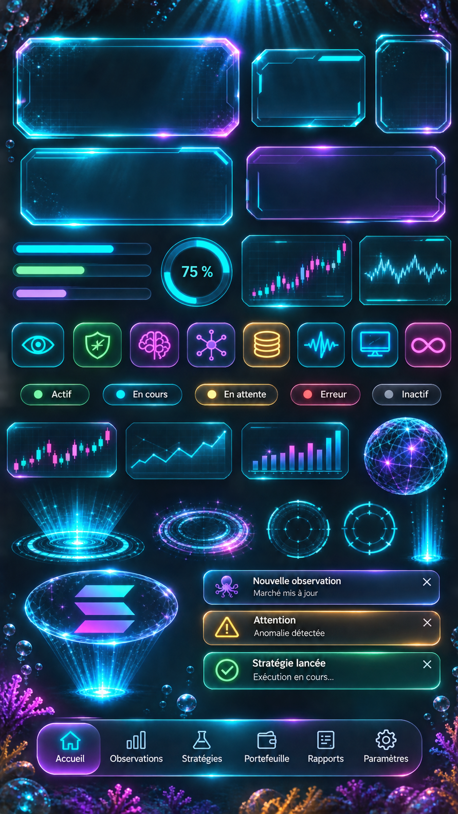

<!doctype html><html lang="fr"><meta charset="utf-8"><meta name="viewport" content="width=device-width,initial-scale=1"><title>Gégé Wall Street</title><style>
*{box-sizing:border-box}body{margin:0;background:#030914;color:#d8f5ff;font:16px system-ui}canvas{position:fixed;inset:0;width:100%;height:100%;z-index:-1}main{max-width:1100px;margin:auto;padding:24px}header{letter-spacing:3px}small{color:#86a7ba}.grid{display:grid;grid-template-columns:repeat(auto-fit,minmax(145px,1fr));gap:12px}article{background:#071727dd;border:1px solid #346078;border-radius:16px;padding:18px;backdrop-filter:blur(8px)}strong{display:block;font-size:28px;margin-top:8px}footer{margin-top:55vh;background:#071727dd;padding:18px;border-radius:16px}h1{font-size:clamp(24px,5vw,42px)} body{background:radial-gradient(ellipse at 50% 55%,#172449 0%,#080e20 48%,#02050d 85%);isolation:isolate}canvas{z-index:0;pointer-events:none}main{position:relative;z-index:1}header{color:#70e9ff;font-size:12px}article{box-shadow:inset 0 0 20px #39c9ff0b,0 8px 28px #0005}footer{margin-top:38vh;border:1px solid #346078} .organs{display:grid;grid-template-columns:repeat(auto-fit,minmax(130px,1fr));gap:8px;margin-top:16px}.organs button{background:#071727d9;border:1px solid #346078;color:#c6eaff;padding:12px;border-radius:8px;text-align:left;cursor:pointer}.organs button:focus-visible{outline:2px solid cyan}.organs button span{display:block;font-size:11px;color:#91a7bd}.detail{background:#071727e8;border-left:2px solid #65dcff;padding:12px;margin-top:8px;min-height:60px}@media(max-width:600px){main{padding:14px}footer{margin-top:30vh}.organs{grid-template-columns:repeat(2,1fr)}} body{background:#030914 url('backgrounds/back-horiz.png') center center/cover fixed no-repeat}main{max-width:1200px;padding-bottom:100px}h1{color:#e2a0ff;text-shadow:0 0 18px #a94aff}.grid,.organs{grid-template-columns:repeat(4,minmax(0,1fr))}.organs{margin-top:32vh}.organs button,article,.detail,footer{background:linear-gradient(135deg,#07334ad9,#090c24e8);border:1px solid #56dfffaa;box-shadow:inset 0 0 16px #39c9ff25,0 0 14px #32d8ff25;backdrop-filter:blur(8px)}.organs button{min-height:85px;font-size:16px}.organs button:nth-child(3n){border-color:#d18aff}.organs button[aria-pressed=true]{outline:2px solid cyan}footer{margin-top:16px}.dock{position:fixed;bottom:0;left:0;right:0;display:flex;justify-content:space-around;background:#061426f5;border-top:1px solid #7d91dd;padding:12px 4px calc(12px + env(safe-area-inset-bottom));z-index:5}.dock a{color:#bceaff;text-decoration:none;font-size:12px;text-align:center}details img{max-width:100%}#observations p{overflow-wrap:anywhere}@media(max-width:700px){body{background-image:url('backgrounds/back-vert.png');background-position:center top}.grid,.organs{grid-template-columns:repeat(2,minmax(0,1fr))}.organs{margin-top:32vh}main{padding:14px 12px 100px}} </style><main id="home"><header>OCTOPUS FINANCE · V0.5</header><h1>Gégé Wall Street</h1><p><span id='status'>En attente des observations</span></p><section class="grid" id="portfolio"><article><small>Capital initial prévu</small><strong>100 €</strong></article><article><small>Valeur actuelle</small><strong>—</strong></article><article><small>Tokens observés</small><strong id='count'>—</strong></article><article><small>Mode</small><strong>Paper</strong></article></section><nav class="organs" aria-label="Organes du robot"></nav><div class="detail" id="organ-detail" aria-live="polite">Sélectionnez un organe pour consulter son rôle.</div><footer id="reports">Guardian · aucune transaction réelle possible dans le moteur actuel.<br><small>Animation décorative uniquement. Aucune activité de marché n'est simulée à l'écran.</small><p id='date'></p><div id='observations'></div><details><summary>Référence graphique HUD</summary></details></footer></main><nav class="dock" aria-label="Navigation"><a href="#home">⌂<br>Accueil</a><a href="#observations">◉<br>Observations</a><a href="#organ-detail">◇<br>Organes</a><a href="#portfolio">▣<br>Capital</a><a href="#reports">▤<br>Rapports</a></nav><script>
const organs=[['Observer','Collecte à vérifier','Surveille les profils Solana et les pools.'],['Guardian','Partiel','Refuse les tokens dont la sécurité est inconnue.'],['Cortex','Non connecté','Analyse IA prévue, aucune consommation API.'],['Mémoire','Prototype','Conserve le dernier relevé dans status.json.'],['Simulation','Prototype','Capital fictif de 100 euros, aucune signature.'],['Stratégies','À développer','Comparaison expérimentale des règles.'],['Nerfs','Prototype','Transmet les observations au dashboard.'],['Autonomie','Manuelle','Aucune surveillance périodique activée.']];
for(const [name,state,desc] of organs){const b=document.createElement('button');b.type='button';b.textContent=({Observer:'◉',Guardian:'⬡',Cortex:'✺',Mémoire:'▤',Simulation:'▣',Stratégies:'◇',Nerfs:'ϟ',Autonomie:'∞'})[name]+' '+name;b.setAttribute('aria-pressed','false');const s=document.createElement('span');s.textContent=state;b.append(s);b.onclick=()=>{document.querySelectorAll('.organs button').forEach(el=>el.setAttribute('aria-pressed',String(el===b)));document.getElementById('organ-detail').textContent=name+' — '+desc};document.querySelector('.organs').append(b)}
async function refresh(){
 const status=document.getElementById('status'), list=document.getElementById('observations');
 try{
 const r=await fetch('./status.json',{cache:'no-store'});if(!r.ok)throw Error('HTTP '+r.status);
 const d=await r.json();if(!Array.isArray(d.observations))throw Error('Invalid observations');
 status.textContent=d.status==='observed'?'Dernière collecte disponible':'Collecte en erreur : '+(d.error||'inconnue');
 document.getElementById('date').textContent='Collecte UTC : '+d.timestamp;
 document.getElementById('count').textContent=d.observations.length;
 list.replaceChildren();
 for(const o of d.observations){const p=document.createElement('p');p.textContent=(o.symbol||o.address)+' · '+o.decision+' · '+o.reason;list.append(p);}
 }catch(e){status.textContent='Données indisponibles : '+e.message;document.getElementById('count').textContent='—';list.replaceChildren();document.getElementById('date').textContent='';}
}
refresh();setInterval(refresh,60000);
</script></html>